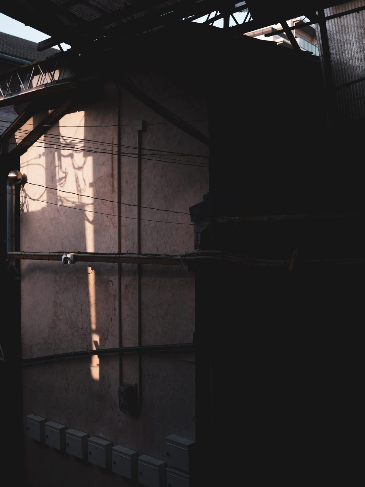
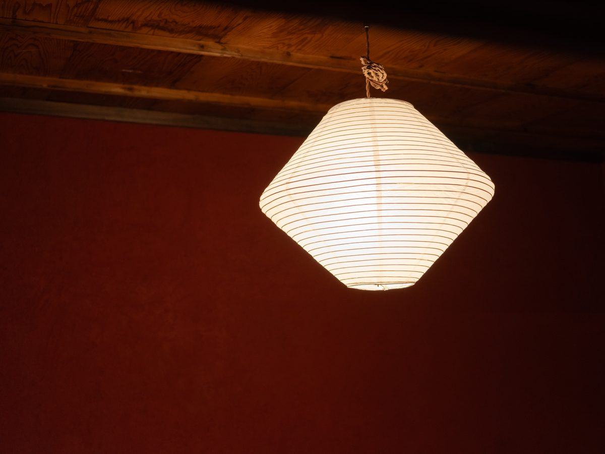
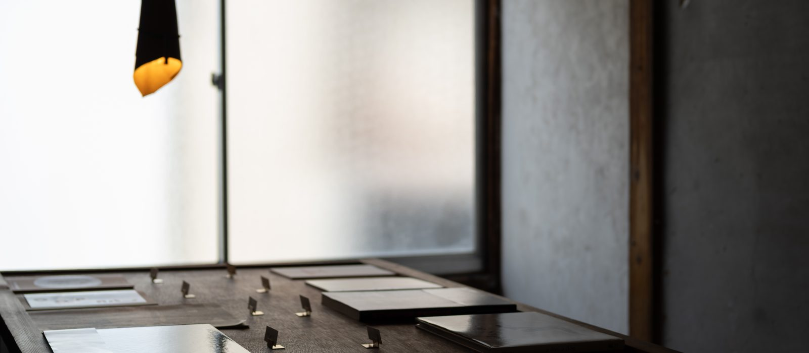
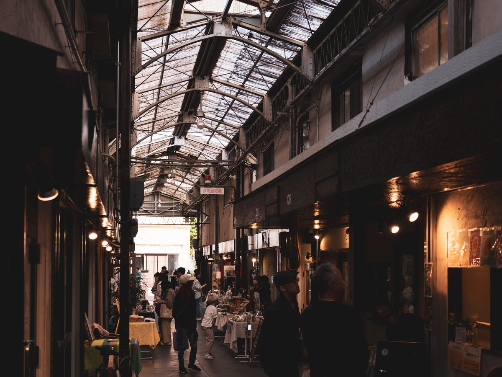
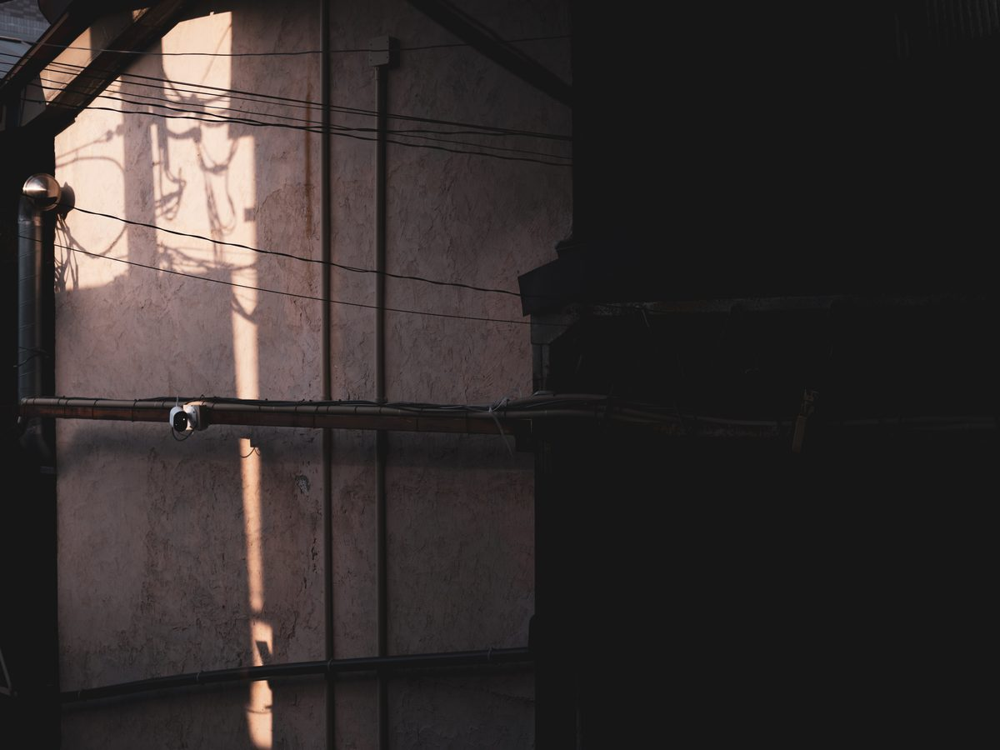

01 / Stay
Stay
宿泊

商店街に残る木造長屋の、一日一組の宿
刷々 sassa は、大阪・放出のレトロな商店街に残る
木造長屋の一室を改修した、一日一組限定の宿です。
「刷々（さっさ）」という名前は、
本のページをめくる音に由来しています。
土壁や木などの自然素材を用い、
古い建物の魅力をできるだけ残して改修しました。
sassa is a renovated room in a wooden row house (nagaya) in a retro shopping street in Hanaten, Osaka — a one-group-per-day guesthouse. The name "sassa" comes from the sound of turning the pages of a book.
The building also houses a glass studio, a craft shop, and a yoga school, while the surrounding street is lined with restaurants, cafés, a craft beer shop, and a baked-goods store — the everyday life of local Osaka. A place for sightseeing, but equally for reading and quiet, unhurried time.

Room Details
One group per day
Approx. 27 m²
1 queen-size bed
Shower room, washbasin & toilet
Renovated with earthen walls & natural wood
2nd floor, accessed by stairs
ご予約前にご確認ください
階段について 客室は2階にあり、お部屋へのアクセスは急な階段のみとなります。古い長屋の構造を活かしているため、階段の勾配は一般的なホテルやマンションより急です。大きなスーツケースをお持ちの方や、足腰に不安のある方はご注意ください。
お子様について 古い建物のため、急な階段や低い位置の窓があります。小さなお子様向けの安全設備は設けておりませんので、ご予約前にご確認ください。
About the stairs The room is on the 2nd floor, accessible only by a steep staircase. As the original nagaya structure has been preserved, the stairs are steeper than those of a typical hotel. Please take care if you have a large suitcase or difficulty with stairs.
About children Being an old building, there are steep stairs and low windows. No childproofing or safety equipment is provided, so please consider this before booking.
Gallery




